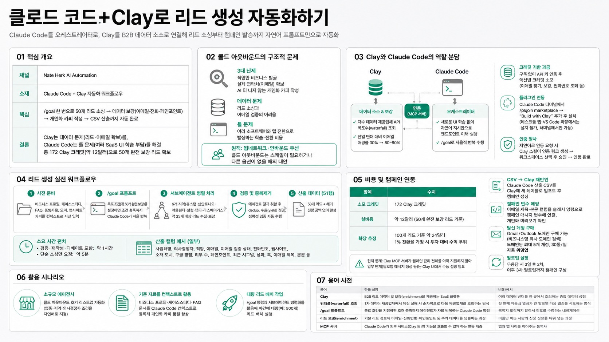

Nate Herk | AI AutomationMORNING DIGEST · 2026-07-13 · Nate Herk | AI Automation🎬 영상
클로드 코드+Clay로 리드 생성 자동화하기
title: 클로드 코드+Clay로 리드 생성 자동화하기

01핵심 개요
항목
내용
채널
Nate Herk
AI Automation
소재
Claude Code를 오케스트레이터로, Clay를 B2B 데이터 소스로 연결해 콜드 아웃바운드 리드 생성·개인화 카피 작성·캠페인 발송까지 자연어 프롬프트만으로 처리하는 워크플로우
핵심
프롬프트 한 번(/goal 명령)으로 50개 리드 소싱, 데이터 보강(이메일·전화번호·페인포인트), 개인화된 이메일 제목/본문 작성, CSV 산출까지 자동 완료
결론
Clay는 데이터 문제(리드·이메일 확보)를, Claude Code는 툴 문제(여러 SaaS UI 학습 부담)를 해결하며, 총 비용 172 Clay 크레딧(약 12달러)으로 50개 완전 보강 리드 확보
02콜드 아웃바운드의 구조적 문제
첫 고객 확보 시 콜드 아웃바운드 3대 난제 — 적합한 비즈니스 발굴, 실제 연락처(이메일) 확보, AI 티 나지 않는 개인화 카피 작성
데이터 문제 — 리드 소싱과 이메일 검증의 어려움
툴 문제 — 여러 소프트웨어와 탭을 오가며 발생하는 학습·전환 비용
웜네트워크·인바운드 우선 원칙 — 콜드 아웃바운드는 스케일이 필요하거나 다른 옵션이 없을 때의 대안으로 위치
03Clay와 Claude Code의 역할 분담
Clay 역할 — 자체 데이터셋과 다수 데이터 제공업체 API를 폭포수(waterfall) 방식으로 순차 조회, 단일 벤더 대비 이메일 매칭률 30%에서 80~90%로 상승
Claude Code 역할 — 새로운 UI 학습 없이 자연어 지시만으로 Clay MCP 서버의 엔드포인트를 이해·실행하는 오케스트레이터
크레딧 기반 과금 — 구독 대신 API 키 연동 후 크레딧 소모 방식, 이메일 찾기·인물/기업 보강·전화번호 조회 등 액션별 과금
Clay-Claude Code 플러그인 연동 — Claude Code 터미널에서 /plugin marketplace 명령으로 "Build with Clay" 마켓플레이스 추가 후 설치(데스크톱 앱·VS Code 확장에서는 설치 불가, 터미널에서만 마켓플레이스 추가 가능)
인증 절차 — 플러그인 설치 후 자연어로 인증 요청 시 Clay 스킬이 인증 링크 자동 생성, 워크스페이스 선택 후 승인하면 연동 완료
04리드 생성 실전 워크플로우
사전 준비 컨텍스트 파일 — 비즈니스 프로필, 케이스 스터디, FAQ, 증빙 자료, 오퍼, 웹사이트 카피를 Claude Code 프로젝트에 사전 입력해 개인화 카피 품질 확보
/goal 프롬프트 활용 — 목표 조건(예: 완전 보강된 50개 리드)을 설정하면 조건 충족까지 Claude Code가 자율적으로 반복 작업
서브에이전트 병렬 처리 — 휴스턴·샌안토니오·애틀랜타·샬럿·탬파·라스베이거스 등 6개 지역에 서브에이전트를 배치해 각 25개 매장 리드 수집·보강
검증 및 중복제거 단계 — 에이전트 결과 취합 후 중복제거(dedup), 수율(yield) 점검, 데이터 정확성 검증을 다이나믹 워크플로우로 자동 수행
소요 시간 편차 — 검증·재작성·에이전트 간 토론(디베이트) 포함 시 약 1시간 소요, 단순 소싱만 요청 시 약 5분 소요
산출 데이터 컬럼 — 사업체명·의사결정자·직함·이메일·이메일 검증 상태·전화번호·웹사이트·소재 도시·구글 평점·리뷰 수·비즈니스 페인포인트·최근 시그널·주목할 성과·퍼스널라이제이션 훅·이메일 제목·본문 등 51행(50개 리드+헤더) 전량 공백 없이 완성
05비용 및 캠페인 연동
항목
수치
소모 크레딧
172 Clay 크레딧
실비용
약 12달러(50개 완전 보강 리드 기준)
확장 추정
100개 리드 기준 약 24달러, 1% 전환율 가정 시 투자 대비 수익 우위
CSV→Clay 재반입
Claude Code 산출 CSV를 Clay에 새 테이블로 임포트 후 캠페인 생성
캠페인 변수 매핑 — 임포트한 테이블의 이메일 제목·본문 컬럼을 슬래시 명령으로 캠페인 메시지 변수에 연결, 리드별 개인화 미리보기 확인
발신 계정 구매 — Clay 내에서 Gmail/Outlook 도메인 구매 가능(비즈니스명 유사 도메인 검색), 도메인당 최대 5개 계정, 일일 발송량 제한(30통/일)으로 자동 워밍업
후속 팔로업 설정 — 무응답 시 3일 후 2차, 이후 3차 팔로업 메시지까지 캠페인 내 구성 가능
현재 한계 — Clay MCP 서버가 캠페인 관리 전체를 아직 지원하지 않아 일부 단계(팔로업 메시지 생성 등)는 Clay UI에서 수동 설정 필요
06활용 시나리오
소규모 에이전시의 콜드 아웃바운드 초기 리스트업 자동화(업종·지역·의사결정자 조건을 자연어로 지정)
기존 비즈니스 프로필·케이스스터디·FAQ 문서를 Claude Code 컨텍스트로 등록해 개인화 이메일 카피 품질 향상
/goal 명령과 서브에이전트 병렬화를 활용해 야간에 대량(예: 500개) 리드 배치 작업 실행
07용어 사전
용어
한줄 설명
비유/예시
Clay
B2B 리드 데이터 및 보강(enrichment)을 제공하는 SaaS 플랫폼
여러 데이터 벤더를 한 곳에서 조회하는 종합 데이터 상점
워터폴(waterfall) 조회
1차 데이터 제공업체에서 매칭 실패 시 순차적으로 다음 제공업체를 조회하는 방식
첫 번째 자물쇠 열쇠가 안 맞으면 다음 열쇠를 시도하는 방식
/goal 프롬프트
종료 조건을 지정하면 조건 충족까지 에이전트가 자율 반복하는 Claude Code 명령
목적지 도착까지 알아서 경로를 수정하는 내비게이션
리드 보강(enrichment)
기본 리드 정보에 이메일·전화번호·페인포인트 등 추가 데이터를 덧붙이는 과정
이름만 아는 사람의 신상 정보를 채워 넣는 과정
MCP 서버
Claude Code가 외부 서비스(Clay 등)의 기능을 호출할 수 있게 하는 연동 계층